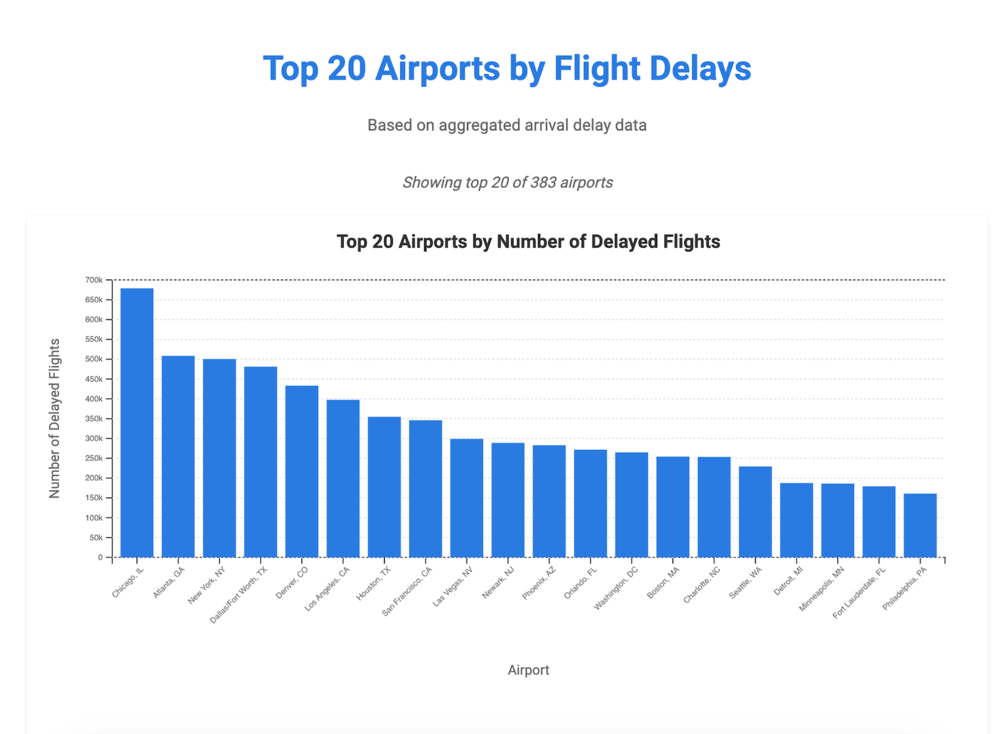

Total Arrival Delays in States
For every year except 2020 (due to COVID where travel was all time low), you can see that at least 20% of arrivals had some sort of air traffic incident involved whether it be delays, cancellations, or divertions. While 20% might not seem super high in a general perspective, considering the number of flights that take place on a yearly basis 20% is a considerable issues for the airline industry in the US. Not only does this lead to customer dissatisfaction but also leads to immense profit loss within companies.
Arrival Delays By Carrier
You can see from the graph that carriers such as Southwest, American, Skywest, and Delta Air almost consistently on the top every year for most delay data. For airlines like Delta and American that are popular amongst individuals it makes sense for their popularity to correlate to the increase in air traffic for their company. But interestingly enough, these carriers with the most air traffic consumption log have business concentrated in areas like California, Texas, Illinois, New York, and Florida, all the cities that we saw earlier in our choropleth map that had the most concentrated data in delays.
Top 20 Airports in Flight Delays
Unsurprisingly, major international hubs like Atlanta (ATL), Chicago O’Hare (ORD), and Dallas-Fort Worth (DFW) rank at the top, as these airports handle an enormous volume of flights daily. Interestingly, some mid-sized airports also appear in the top 20, likely due to regional congestion or weather-related disruptions. The chart reinforces the idea that the busiest airports tend to have the most delays, but other factors like geography and airline scheduling inefficiencies also play a significant role in delay patterns.
Total Arrival Delays in States
As expected, states like California and Texas which are heavily populated and also have major well-known airports that serve millions of passengers annually. To our surprise, Illinois is indicated to be the 4th highest overall delay concentrated state compared to a state like New York. Interestingly enough, these states California, Texas, Illinois, and Florida are states with popular national airports but also lots of extreme weather conditions which makes sense why these states are delay prone with airflights.
Percentage of Total Arrival Delays for Top and Bottom 20 States


This is just another contribution towards the choropleth map we made earlier further showing how states like Texas, Florida, and California make up 30%+ of delay data alone compared to the other remaining states. Looking at the bottom 20 graph, you can see how states that are known to have smaller population have low delay data and collectively don’t even make up 20% of delays in the USA. A good amount of these states in the top 20 are also tourist attraction spots or areas with popular universities which also contribute to more flight delays.
Delays Count by State Per Year
California is constantly the number 1 in air traffic except 2020, which is due to covid when international regulations tightened for flights, and a huge amount of California flights are international. On the other hand, Texas has more domestic travels which is why 2020 there is more air traffic. For most other states other than the 4 mentioned in the overall graph, there isn’t much change in air traffic throughout the years with exceptions such as North Carolina or Georgia having increases in travel for 1 year then going back to their average delay.
Regional Analysis Delay Stacked Bar Charts

We can see that similar to the low correlation in the heatmap, security delay doesn’t even make up 10% of recorded delays for any region. Interestingly though, the weather doesn’t seem too big of a contributor just based off this stacked bar chart. The Midwest and West Coast have the biggest stacks for weather which makes sense as these areas of America have states with more extreme weather conditions. Similar to the heatmap results, carrier, NAS, and late aircraft delays make up approximately 80% of all delay data for each region. This further proves that operational efficiencies like scheduling, maintenance, and carrier management are the biggest issues that contribute delays nationwide and this is a big issue especially in the West coast as seen through the tallest bar within this chart.
Correlation HeatMap between Arrival Delays and Causes of Delays

We see when comparing air delay (minutes) to other specific delay features, the correlation between late aircraft is 0.96, carrier is 0.94, NAS 0.86, weather 0.77, and security 0.38. While it seems security doesn’t have much impact on airline delays, it seems that features like weather and NAS have a moderately high contribution towards higher delay times. Late aircrafts have 0.96 correlation to arrival delays which indicates that late delays from previous flights have a huge impact on arrival delays. These results suggest that while airline control factors like carrier and aircrafts have the most significant affect towards delay increases, systemic issues like traffic congestion weather conditions also have almost as significant impact. This indicates the fact that several adjustments are required for improvement whether it be operational improvements, air traffic management, enhanced weather forecasting strategies, etc.
Relationship Between Arrival Delays and Total Income
You could also see there is an outlier of 2020 which is because of COVID where air travel regulations were strict and economic activity was at an all-time low. There is notable clustering of data within the upper right side of the data which indicates that though not for every increase in delay count, higher delay counts generally lead to moderate high income. This was interesting because initially we had 100% expected income levels to drop as more delays typically would be expected to drop income levels. However, thinking in a broader economic perspective, more delays leads to the fact that there is lots of air traffic which means strong economic activity. Even though there might be so many delays that could lead to income loss, these datapoints suggest that high economic activity sort of outweighs those losses from delays.